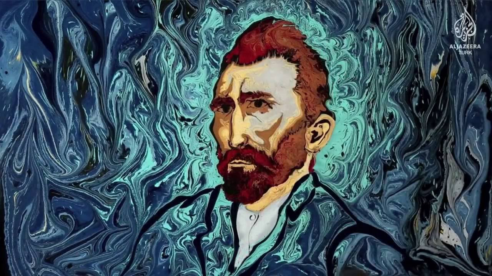
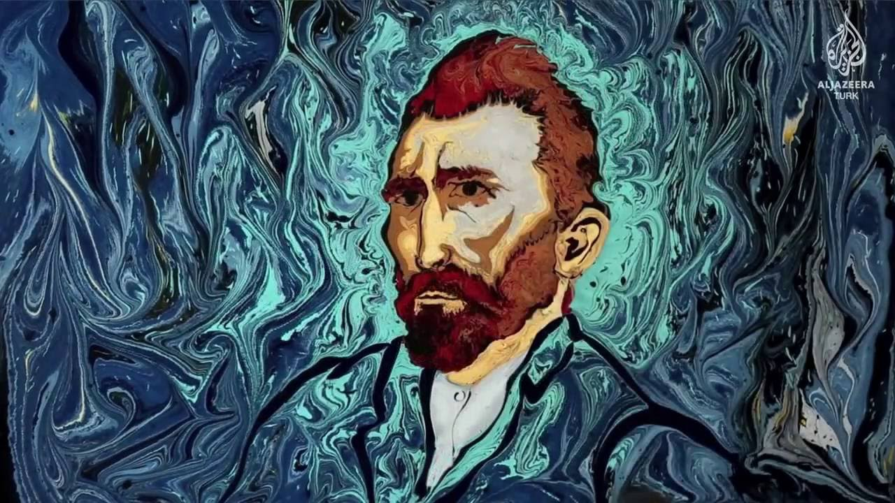
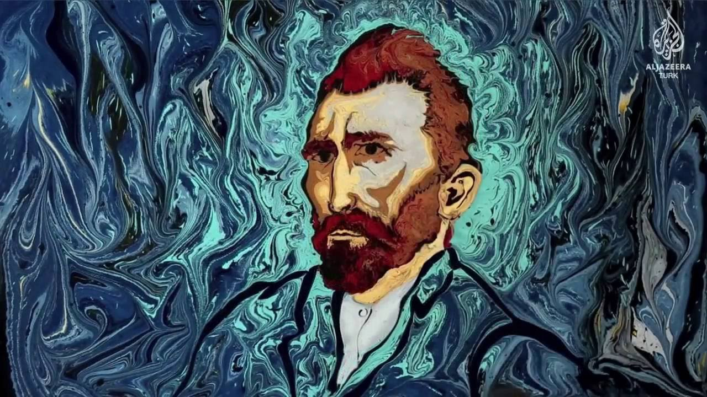

Ebru ook wel papier marmeren genoemd. Ebru is Turkse benaming voor eeuwenoude kunstvorm voor papiermarmeren? Ebru kunst is eeuwenoude traditioneel achtergrond. Het maken van gemarmerd papier is al heel oud. De oudste marmer blad uit Turkije is gedateerd rond het jaartal 1450.
Ebru wordt gemaakt door verf op een vloeistof te laten druppelen. Dat vloeistof wordt gemaakt van traganth gom, carragheen of kitre. De juiste verhouding van dat vloeistof vergt kennis van techniek en ervaring. Het is heel belangrijk dat het gomwater in balans is. Als het gomwater te dun is dan loopt het verf te ver door is het te dik dan gaat de verf zich niet verspreiden. De kennis en ervaring zijn ook vereist voor het aanmaken van de verf. Deze moet ook steeds weer in balans zijn. Door middel van water, verf en ossengal kan de verf de juiste spreidingsgrootte verkrijgen. Als alles in balans is dan kan de verf door middel van een kwast, of pinnetje op het water aangebracht worden. Deze aangebrachte verf loopt uit tot ze tegen elkaar aandrukken. Deze patronen geven een effect van marmer aan. Als het patroon klaar is, word het papier op het verfpatroon gelegd. De drijvende verf op het water wordt dan op een zuurvrij papier overgebracht. Het is een ontdekkingstocht van prachtige kleuren.

Dit hier mensen is nog maar de top van het ijsberg er zijn er talloze voorbeelden hiervan die ik natuurlijk niet kan plaatsen. Maar neem de vrijheid mocht dit je inspirratie hebben getriggert om het dieper te onderzoeken op het internet.